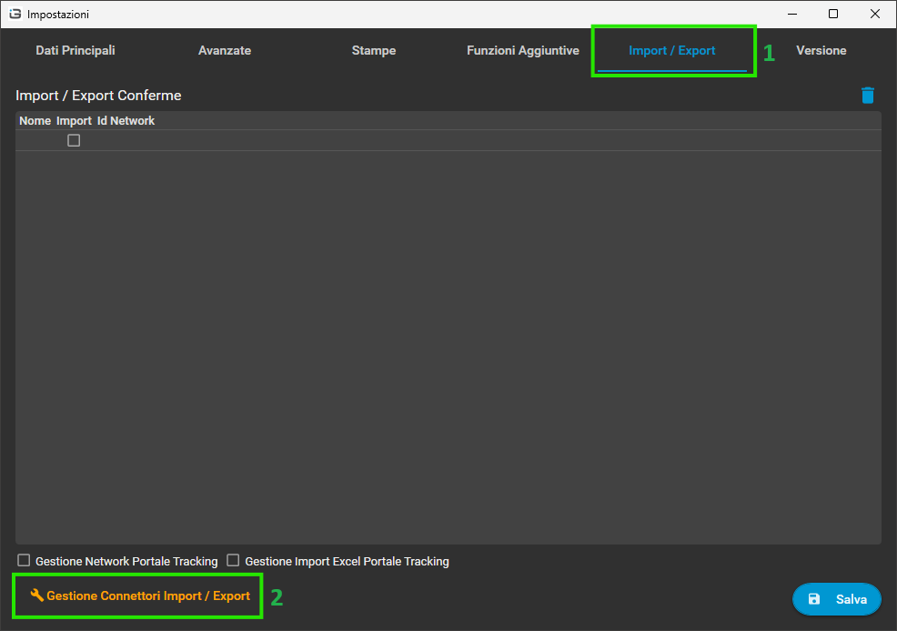
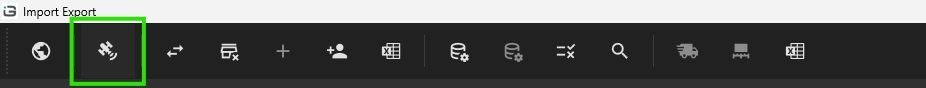
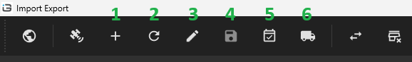
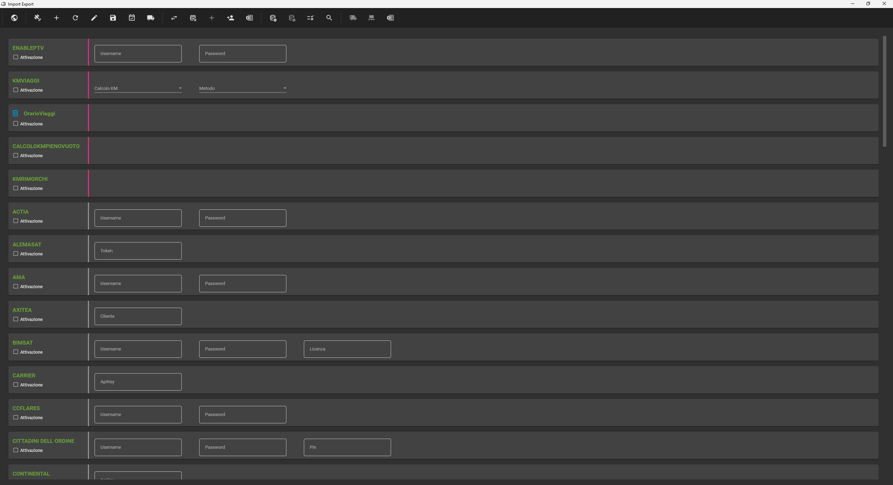
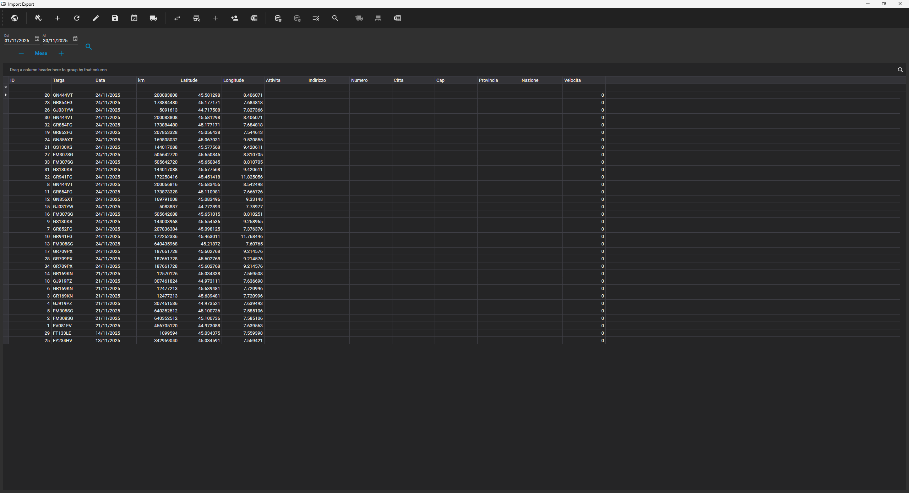

SatTools era un'applicazione satandalone per modificare le impostazioni dei satellitari.
Ora è stata spostata all'interno delle impostazioni di Elite
Per maggiori informazioni basarsi anche sulla pagina di "Debug"
Entrare nelle impostazioni protette da password all'interno della pagina inizial del menu.
Li selezionare la scheda Import/Export e poi premere il pulsante Gestione Connettori Import/Export

Una volta aperta la finestra, selezionare l'icona del satellitare nel menu in cima allo schermo 
Una volta entrati nel modulo delle impostazioni satellitari avremo 6 nuovi pulsanti 
In questo modulo possiamo effettuare una nuova installazione del sistema satellitari.
Le prime 5 selezioni sono impostazioni generali per il funzionamento interno al programma.
Le restanti sono per impostare i dati necessari perché sia possibile la connesione al provider esterno.
Una volta inseriti tutti i dati, premere il pulsante 4 per salvare.
Il salvataggio in questo modulo darà una serie di messaggi di avviso, in quanto facendo una nuova installazione tutti i dati precedenti andranno cancellati per garantire un inizializzazione pulita

La schermata è identica a quella del primo modulo, in questo caso però, invece di cancellare tutti i dati precedenti, verrà inserito il modulo selezionato all'interno delle impostazioni di Elite
In questa sezione è possibile visualizzare tutti i dati scaricati tramite satellitare 